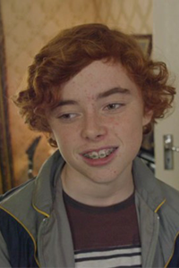
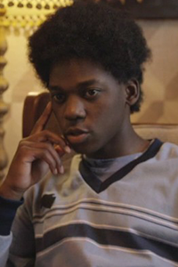
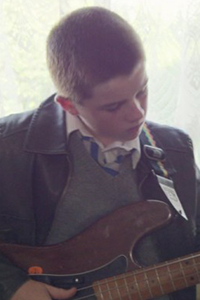
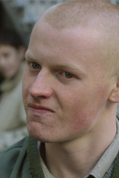

- 코너
- 형의 영향으로 음악에 관심이 많고 싱스트리트 밴드에서 작사와 보컬을 맡고있다.
학교앞에 서있던 라피나를 보고 밴드를 결성하게 된다. 코너의 노래를 듣던 라피나가
코너에게 코스모라는 예명을 지어준다.
- 라피나
- 모델을 꿈꾸며 만나고 있던 남자와 함께 영국으로 가려고 한다.
코너가 밴드를 결성하게 된 계기이며 노래의 대부분은 라피나에게서 영감을 얻어 작사되었다.
코너의 제안으로 뮤직비디오에 출현한다.
- 브렌든
- 코너가 음악과 가까워질 수 있었던 계기가 되어준 형.
코너와 함께 음악방송을 보고 평가하기도 하며 코너의 음악을 듣고 조언을 해준다.
- 에이먼
- 싱스트리트의 핵심멤버. 작곡도 할 뿐만아니라 많은 악기들을 능숙하게 잘 다룬다.
집에 토끼가 많이 있다

- 대런
- 싱스트리트의 프로듀서이자 뮤직비디오 촬영담당.
코너가 밴드를 만들자고 했을 때 멤버들을 알차게 구성하는데 도움을 준다.

- 잉기
- 대런이 밴드에 흑인이 있어야한다며 데려온 멤버.
싱스트리트에서 키보드를 맡는다.

- 개리
- 학교에 붙은 밴드모집 공고를 보고 온 멤버.
싱스트리트에서 베이스를 맡는다.

- 베리
- 전학 온 코너를 괴롭히던 불량한 학생.
대런의 제안으로 싱스트리트의 보디가드 역할을 맡는다.